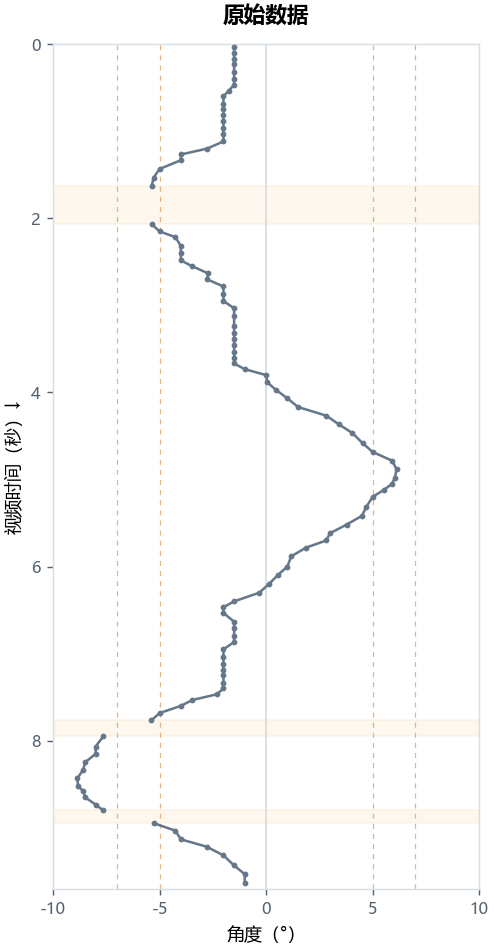
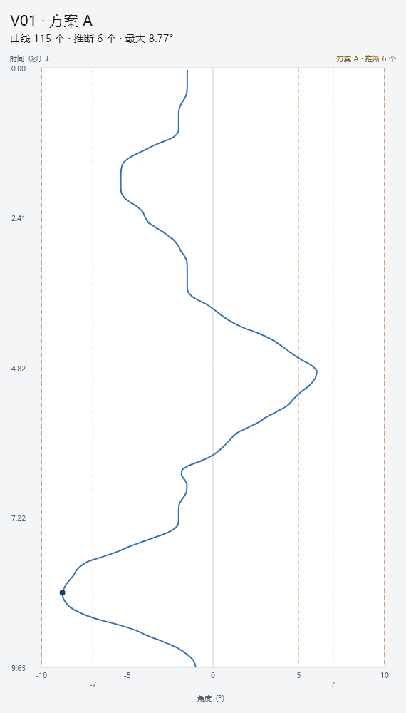
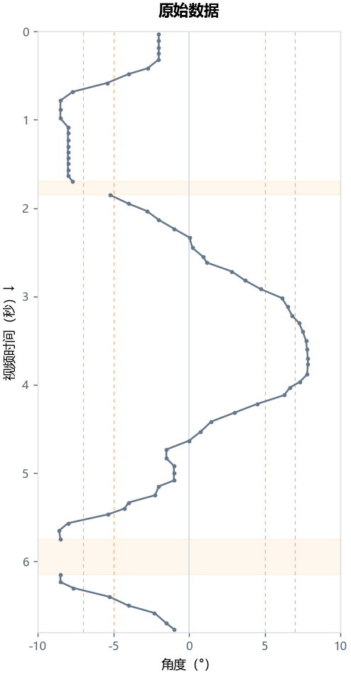
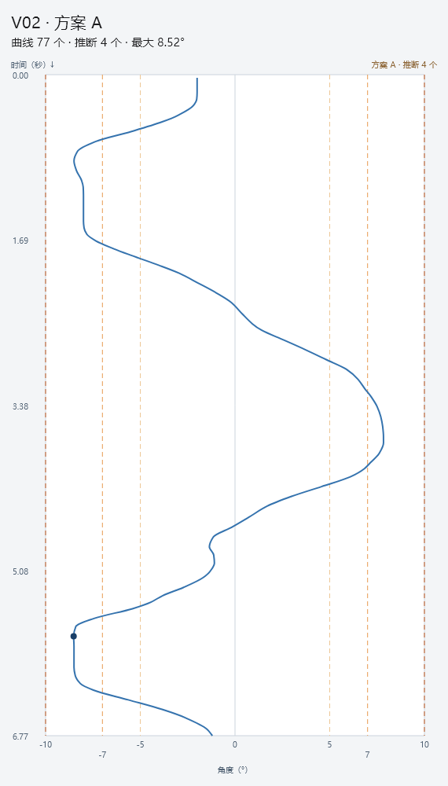
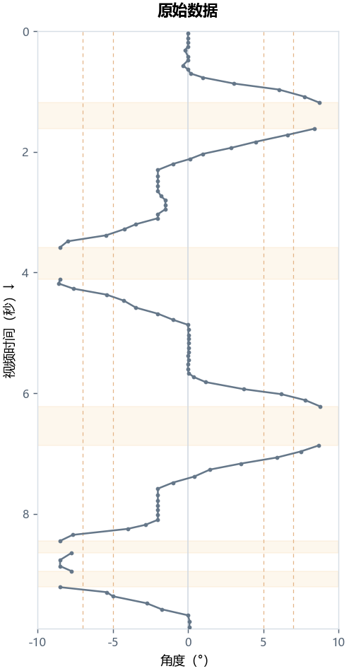
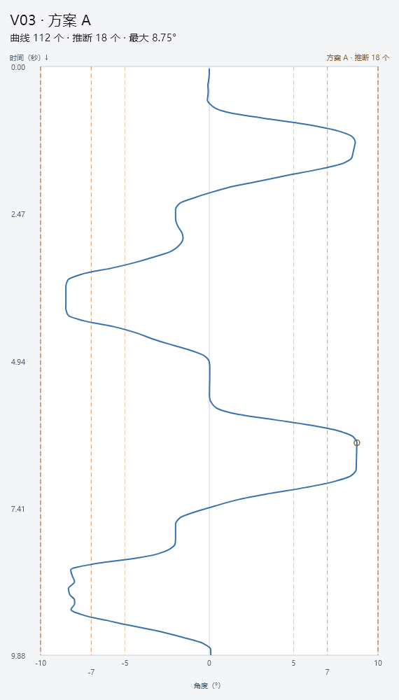
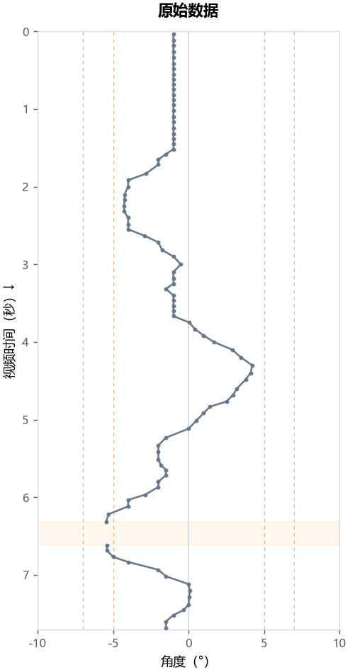
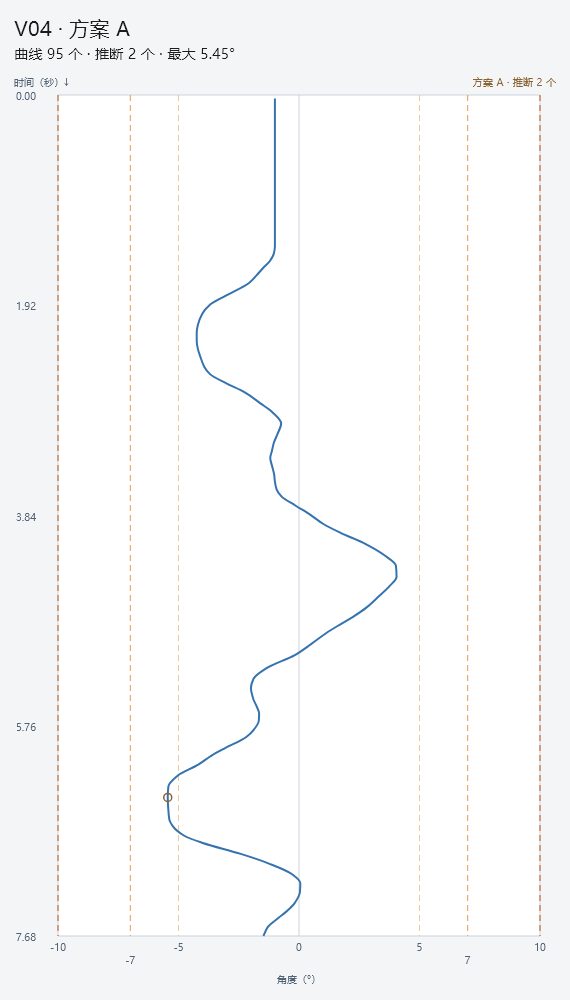
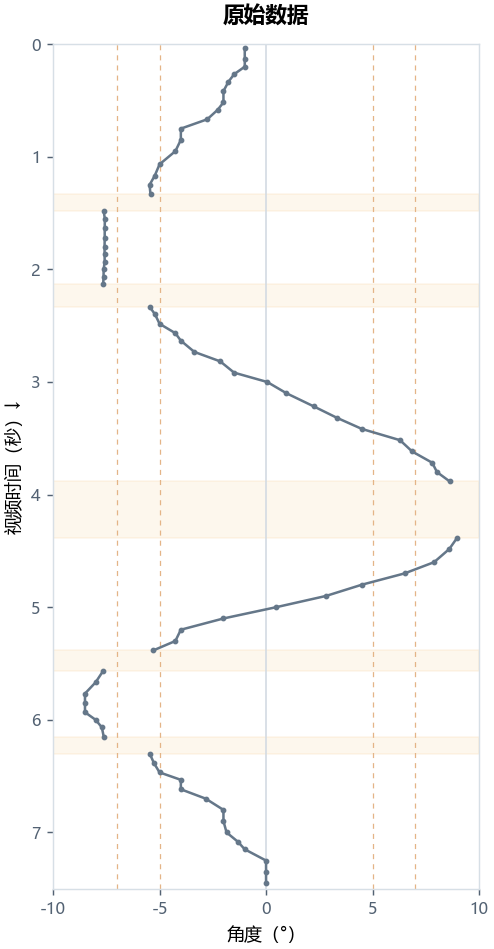
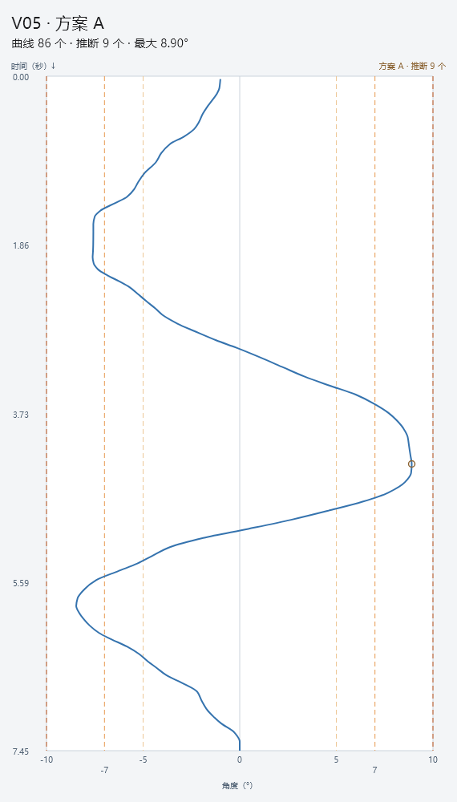

V01


线性补齐缺口，再做 ±180 毫秒三角加权平滑。原始与美化数据分开保存，曲线、展示峰值和 Excel 导出统一使用美化数据。推断点不计入识别成功率，原始失败原因完整保留。
最近五条共 485 点，推断 39 点；原始数据逐点未变。与已选 A 参考最大差约 1.95e-14°；Excel 的 485 个数值均与显示一致。右侧为实际 Flutter 控件截图。安装包已生成，运行中的程序尚未替换。
| 录像 | 点数 | 推断点 | 美化峰值 |
|---|---|---|---|
| V01 | 115 | 6 | 8.77° |
| V02 | 77 | 4 | 8.52° |
| V03 | 112 | 18 | 8.75° |
| V04 | 95 | 2 | 5.45° |
| V05 | 86 | 9 | 8.90° |









